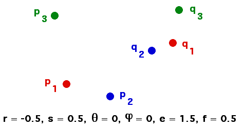

Purpose To review the mathematics involved in finding IFS rules by knowing the images of three non-collinear points. To become familiar with the Affine Transformation Solver software.
Material The Affine Transformation Solver software, pencil, graph paper, ruler, and practice sheets.
Background The mathematics underlying the process for finding the affine transformation from the images of three non-collinear points. Knowing how to solve systems of linear equations suffices, but a fuller understanding requires familiarity with determinants, matrix multiplication and inversion, and the vector cross produce.
Sample Given three points p1, p2, and p3 and their images q1, q2, and q3, we find the IFS rule for the transformation taking p1 to q1, p2 to q2, and p3 to q3. We check this with the Affine Transformation Solver software.
Conclusion Although the software automates the process of finding IFS parameters, one manual exercise reveals some interesting underlying mathematics. This method is used in the Leaf Lab and in the VideoFeedback Lab.